要求ヒアリングから要件定義・設計・実装・品質分析/管理・リリース判定まで、AIの下書きと人間の承認をひとつの基盤でつなぐ開発OSです。
AI-DevContinuum（エーアイ・デブ・コンティニュアム）は、AI × Development × Continuumから生まれた名前です。
AI-DevContinuumが目指すのは、単に開発工程を管理することではありません。
要求ヒアリングから要件定義、設計、実装、テスト、品質分析までをAIでつなぎ、
そこで生まれたレビュー・テスト・障害・品質の知見を次の開発へ還元する。
開発するたびに企業の知識と品質が蓄積され、AIによる支援も継続的に進化していく。
開発を「点」ではなく「連続する知の循環」として捉える。
それが、AI-DevContinuumという名前に込めた思想です。
パッケージ製品への乗り換えではなく、いまの開発フローにAIを組み込んで効率化したい会社に向いています。PM・SE・QAがそれぞれ実務で抱えている悩みに、AI-DevContinuumの機能が直接応えます。
ドキュメント生成だけを目的とするツールでは、品質分析・管理やコード生成を後から組み込もうとすると基盤をまたぐことになります。AI-DevContinuumは、要求からリリース判定までを最初から見据えて、ひとつの基盤で設計しています。
全案件を横断して状況をつかむダッシュボードと、1案件を10工程で追うパイプライン画面。視点は違っても、同じ基盤・同じデータの上で動いています。
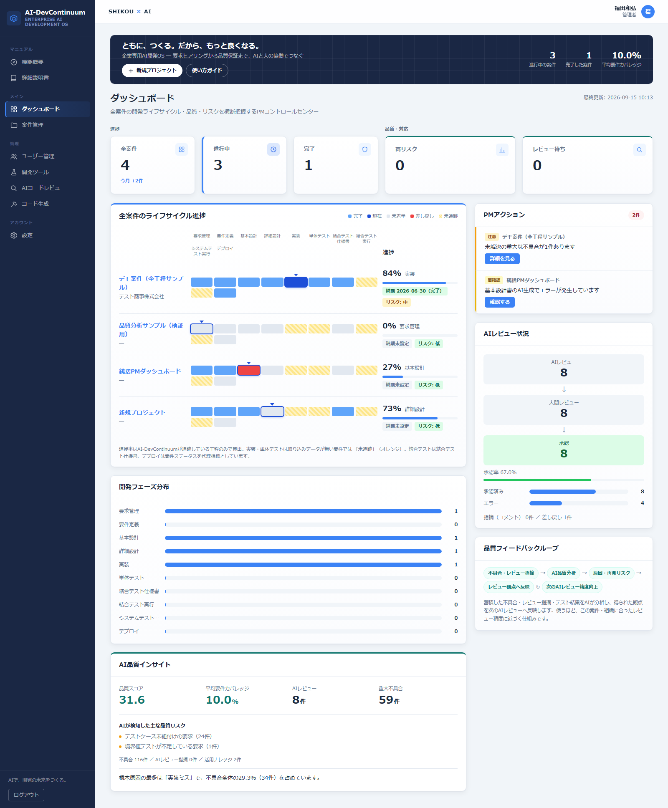
ダッシュボード（実際の案件データ）。全案件の進捗・品質・AIレビュー状況を1画面で横断把握する
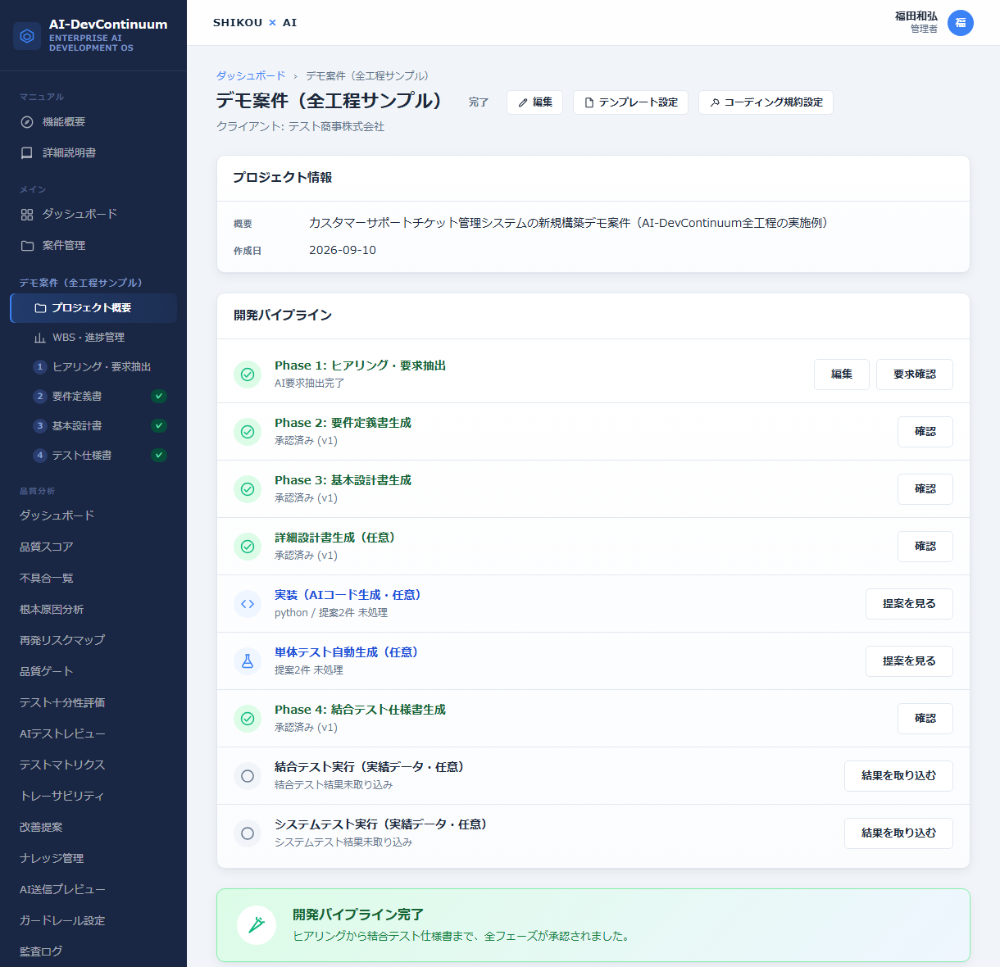
実際の案件管理画面。全10工程の状態を1画面で追跡する（画面はデモ案件）
開発モデルにはV字モデルを採用し、要件定義⇔システムテスト・基本設計⇔結合テスト・詳細設計⇔単体テストが対応関係（トレーサビリティ）を保ちます。 実装・テストで得られた不具合・レビュー・実行結果はAI品質分析にフィードバックされ、そこで生まれたレビュー観点は次のプロジェクトのAIレビュー精度向上として還元されます。
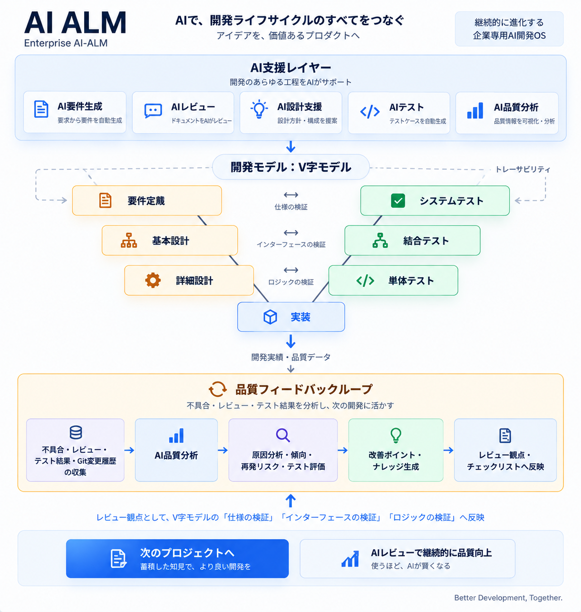
機能マップ。AI支援・V字モデル・品質フィードバックループが1つの構造でつながっている
全部を1つの基盤にするかどうかは、設計の初期段階で実際に比較検討したポイントです。 比較したのは「ドキュメント生成ツール＋品質管理SaaS＋コードレビューツールの併用案」と「単一基盤案」の2つです。 併用案にも利点はあります。専門特化している分機能は深く、乗り換えコストも個別に小さく済みます。
ただし併用案では、要求・設計・テスト・レビューの情報がツールごとに別々のデータへ分断されるため、 REQ-IDによる要求⇔設計⇔テストの対応関係を、ツールをまたいで維持できません。 要求が変わった影響がどのテストケースに及ぶか、レビューで指摘された観点が次のAIレビューに反映されるか、といった連携も、 情報が分断されている分だけ、個別のインポート・エクスポート作業に頼ることになります。
そのため単一基盤案を採りました。要求から品質分析までを同じREQ-IDで一元管理でき、不具合分析で見つかったレビュー観点の抜けはそのまま次のAIレビューへ自動反映されます。
基盤をまたぐと、対応関係の維持と情報連携が二重になります。作るときは大差なくても、案件を重ねてから効いてきます。
要求ヒアリングから実装・単体テスト・コードレビューまで、各工程は「AIが下書きする」「人間が承認する」の順で進みます。
会話ログや議事録をAIが読み、機能要求・画面・不明点を抽出します（機能要求はREQ-ID単位で管理されます）。抽出結果は要件定義書の元データとなり、その後の生成・レビュー・承認の過程で人間が内容を確認します。
要件定義書はヒアリング内容、基本設計書は承認済みの要件定義書、詳細設計書は承認済みの基本設計書というように、各成果物は直前に承認された成果物の内容を踏まえてAIが生成します。生成後は、成果物の種類ごとに定めた5つの観点（例:要件定義書なら完全性・一貫性・明確性・実現可能性・トレーサビリティ）でAIがレビューし、スコアと具体的な指摘を返します。承認するかどうかは人間が決めます。章立てや必須項目は企業独自のテンプレートとして登録でき、承認済みの成果物はMarkdown・Word・Excelの3形式で出力できます。
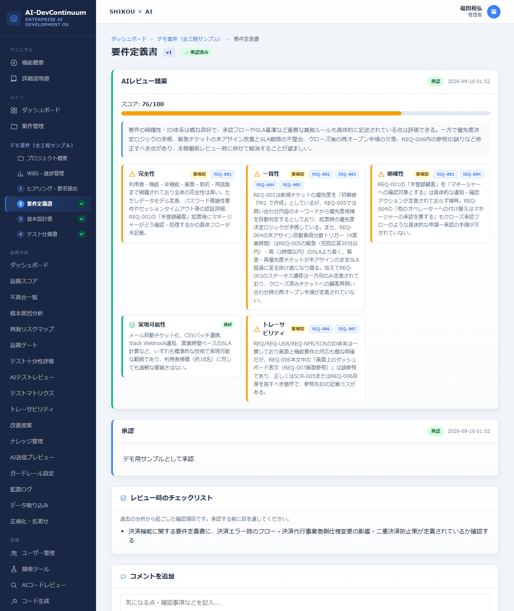
要件定義書のAIレビュー結果（実際の案件データ）。観点別スコアと具体的な指摘、承認履歴を1画面で確認できる
設計が承認されたら、次は実装です。実装は白紙から書き起こすのではなく、既存のソースコードに手を加える形で進みます。起点は2つあります。承認済みの詳細設計書をAIに渡し、変更対象の特定から提案までを任せる方法と、人が対象ファイル・変更内容を指定する方法です。後者は次の順で進めます。
どちらの起点でも、検証・承認のステップは共通です。対応言語はPython・Node.js・Go・Java・C#（.NET）・C/C++の6言語に標準対応しています。
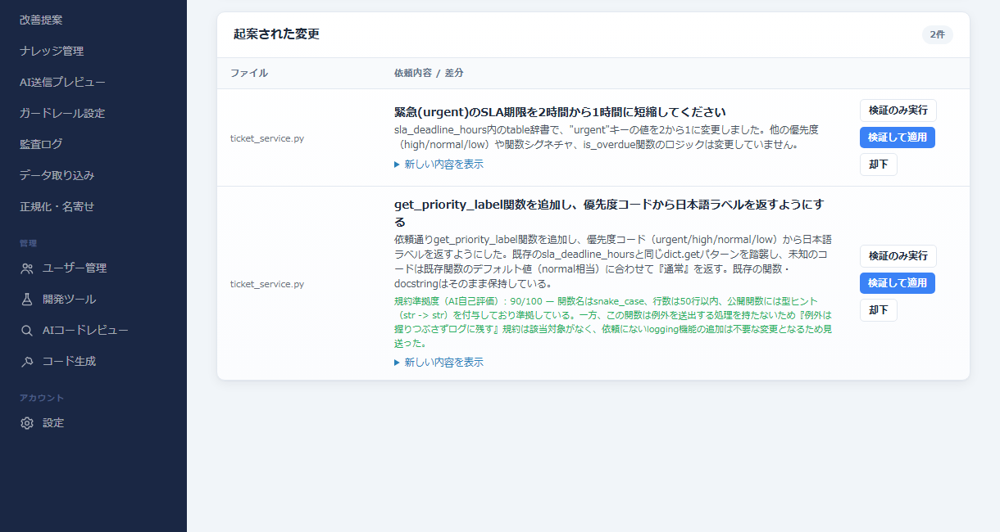
AIコード生成の提案画面。変更範囲を絞り込んだ根拠をAI自身が説明する（実際の生成結果）
コードから単体テストをAIに書かせるだけでなく、詳細設計書の最新版からテストケースを抽出することもできます（承認前のドラフト段階でも抽出可能です）。前提条件・手順・期待結果がケースごとに整理され、そのままテストコード生成に進めます。
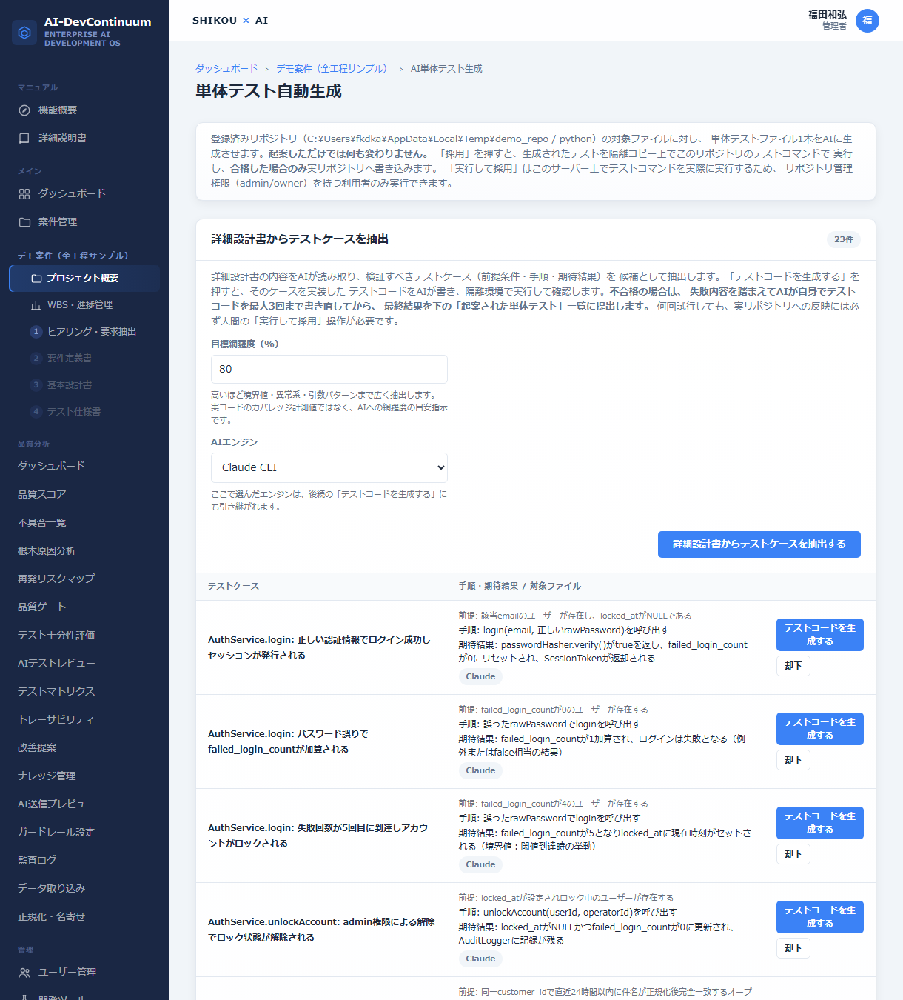
詳細設計書から抽出したテストケース（実際の案件、23件）。ケースごとにテストコード生成へ進める
自己参照のコードレビューだけでなく、クライアント案件のコード生成・単体テスト生成でも、Claude CLIに加えてOpenAI Codex CLIを選べます。1つのコードを2つのAIの目でダブルチェックできます。
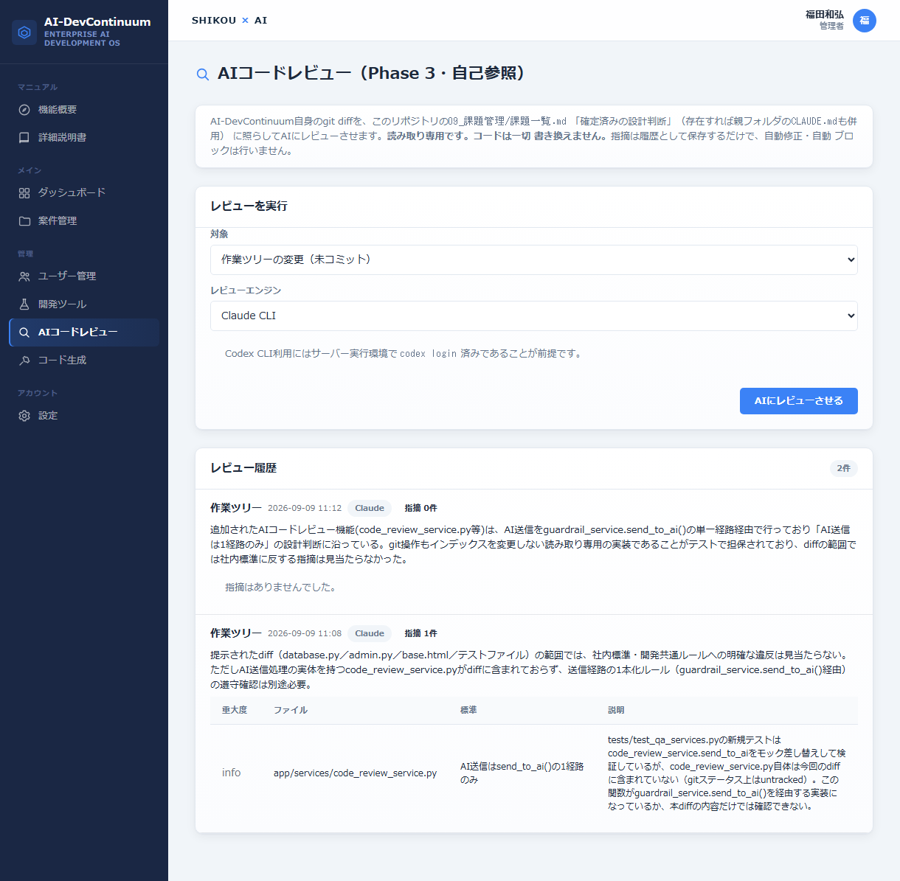
コードレビューのエンジン選択画面。Claude CLI / Codex CLIを切り替えて実行できる
最初から全工程を使う必要はありません。まず要求定義から動かし、そこで得たものを見ながら次へ進みます。
まずPhase 1・2だけ動かし、効果を見てから広げるという段階的な導入も可能です。
「AIが自動でやります」とだけ言っても、現場のPM・エンジニアには何が変わるのか伝わりません。工程ごとに「人がやること」と「AIがやること」を分けています。
| 工程 | 人がやること | AIがやること |
|---|---|---|
| ヒアリング | 会話・議事録の記録、内容の確認 | 機能要求・画面・不明点の抽出 |
| 要件定義書〜結合テスト仕様書 | 本文の確認、承認 / 差し戻し | ドラフト生成、AIレビュー |
| コード変更・単体テスト | 変更依頼の記述、適用の承認 | コード生成、サンドボックスでの検証 |
| 不具合分析 | 分類結果の確認・確定 | 根本原因の分類、類似不具合の検索 |
| リリース判断 | 最終的な進行可否の決定 | リスク予測、品質スコア算出、所見文生成 |
成果物の下書きも、コードの変更案も、AIが作れます。一方で、成果物の承認・コード変更の適用・リリースの可否は、常に人が持ちます。 品質スコアやリスクの数値も決められた計算式でしか算出せず、AIに点数を作らせることはありません。
この線引きを最初に決めておくと、AIの提案が増えても「これは人が見なくていいのか」で迷いません。
「見える化 → 不具合分析 → AI予測 → AI評価 → 品質フィードバック」の5層で品質を管理します。数値の算出はすべて決定論的なロジックで行い、AIは判断材料の説明や所見文だけを書きます。
CSV・JUnit形式のテスト結果やGit連携から実績データを取り込み、機能マスタを整備します。ここで取り込んだ実績が、この先の不具合分析・リスク予測の元データになります。
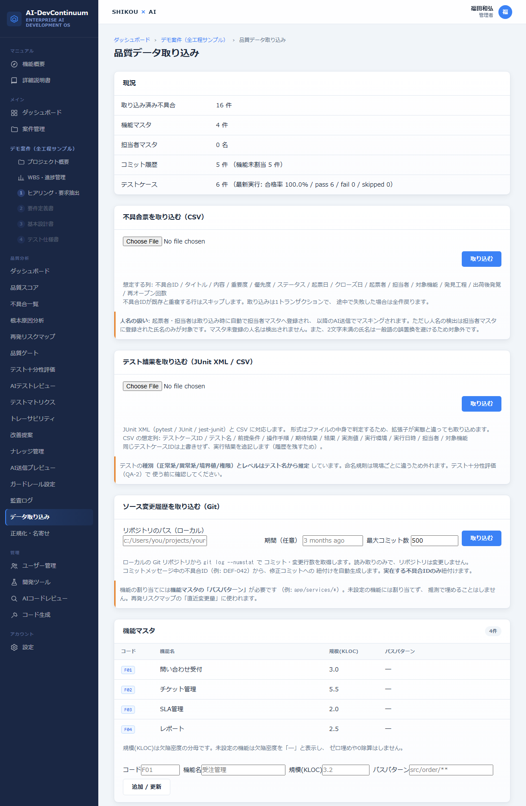
データ取り込み画面。外部の実績データを機能マスタに紐付けて取り込む
不具合件数・原因内訳・カバレッジなど、案件の品質状態をKPIカードとグラフで一望できます。集計はすべて実データからの機械的な計算です。
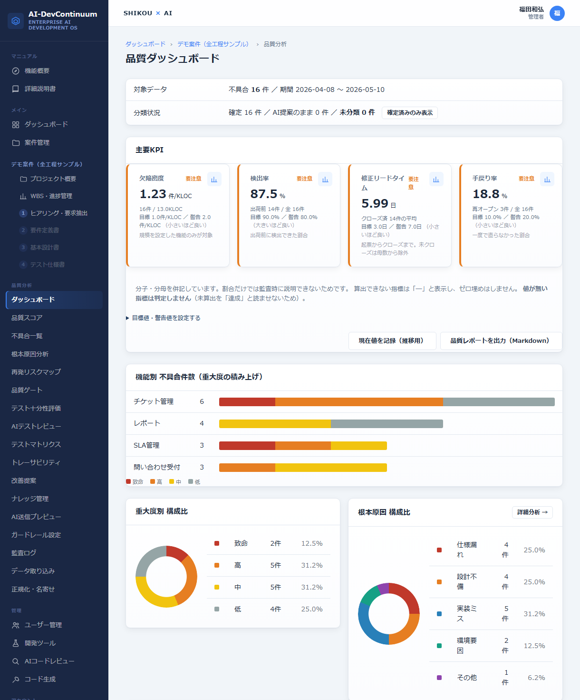
品質ダッシュボード（実際の案件データ）
登録された不具合をAIが根本原因・混入工程ごとに分類し、原因カテゴリの構成比や機能とのクロス集計まで自動で作ります（検出工程は取り込んだ実績データの値をそのまま使用）。分類結果の確定は人間が行います。
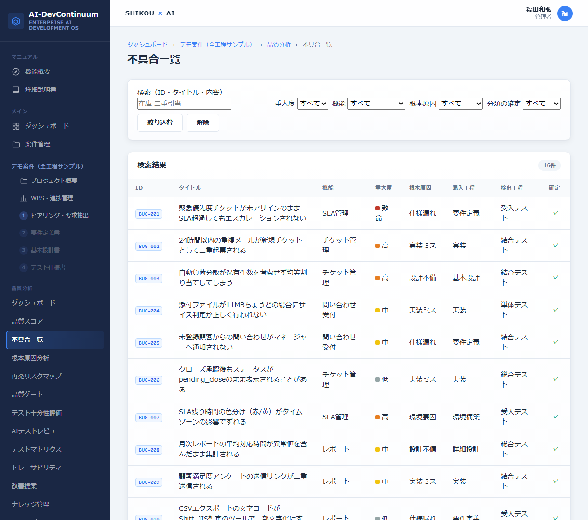
不具合一覧。AIが根本原因・混入工程を分類する
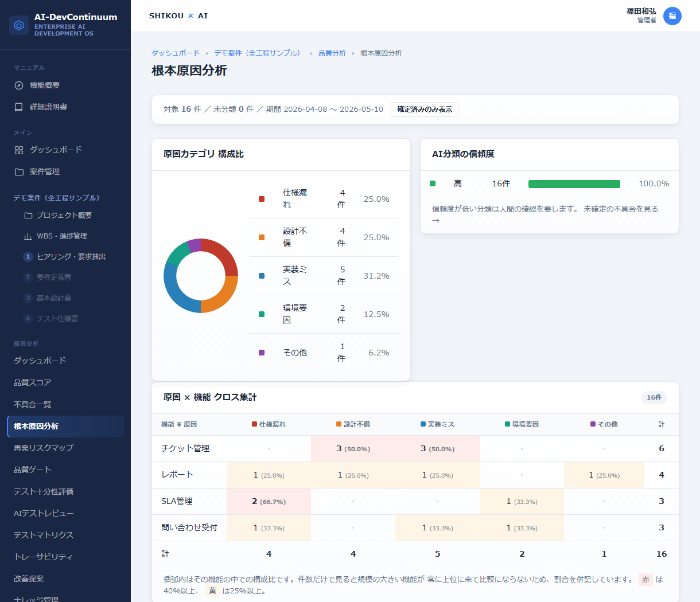
根本原因分析。原因カテゴリの構成比と機能別のクロス集計
不具合密度だけでなく、直近の変更量・カバレッジ不足・変更頻度・類似案件・レビュー指摘の集中度・要求変更の多さまで加味してリスクを算出します。重みは画面から調整でき、内訳（生値と相対値）を必ず併記します。
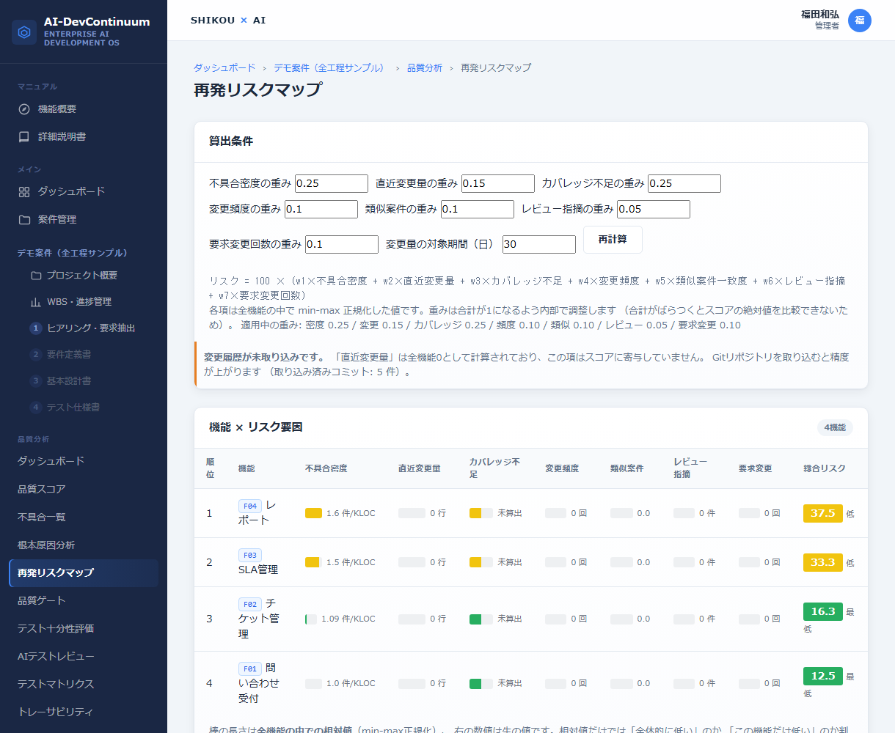
再発リスクマップ（実際の案件データ）。7要素の内訳から総合リスクスコアを算出する
要求とテストケースの紐付け状況から、未検証の要求や不足しているテスト種別（異常系・境界値など）を検出します。要求×テストケースの対応表では、空白セルからそのままAIにテストケース起案を依頼できます（機能×テストケースの対応表は件数確認用です）。
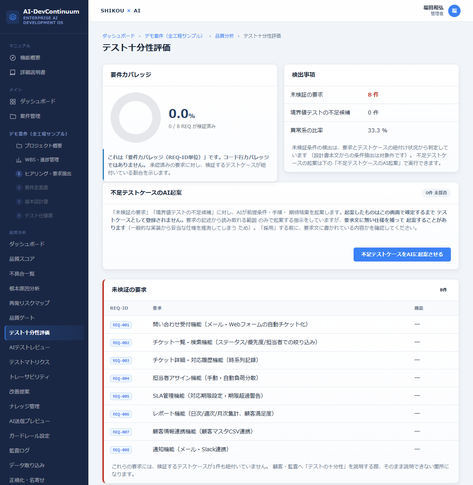
テスト十分性評価。未検証の要求を一覧化する
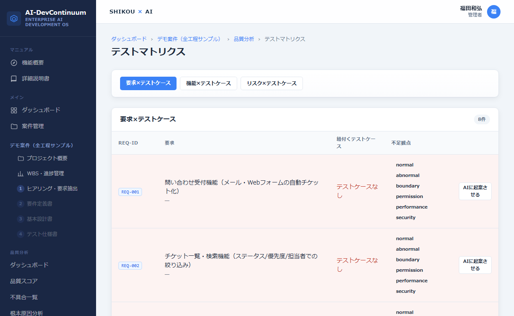
テストマトリクス。空白セルからそのままAI起案に進める
要求カバレッジ・異常系比率・出荷前検出率・手戻り率・品質ゲート通過率を重み付け合算して品質スコアを算出します。品質ゲートは結合テストへ進む条件などを判定し、未達でも理由を記録すれば人間が上書き通過できます。数値そのものはAIに作らせません。
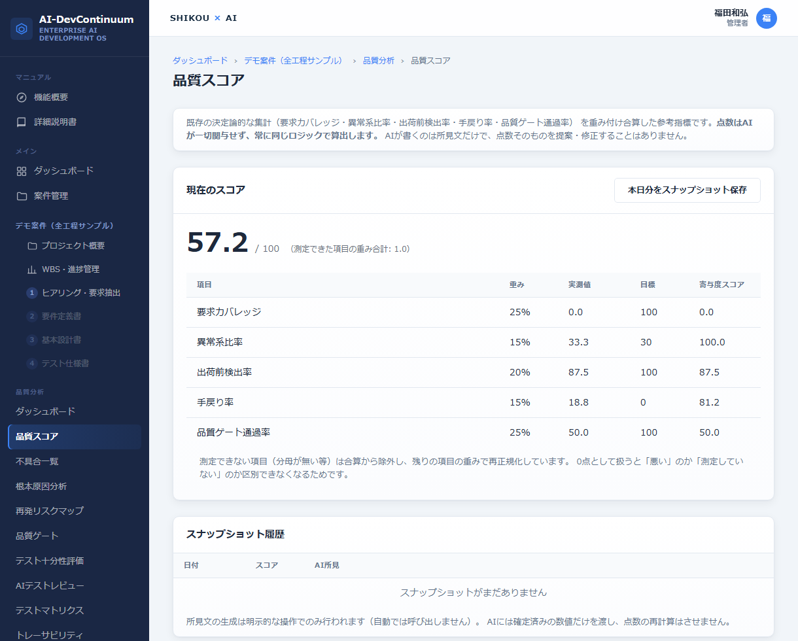
品質スコア。数値は決められた計算式のみで算出し、AIは所見文だけを書く
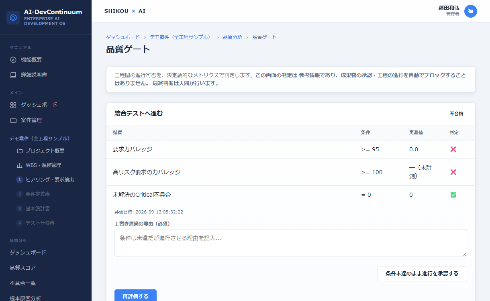
品質ゲート。条件未達でも、理由を記録すれば人間が上書き通過できる
要求⇔設計⇔テストの対応関係をREQ-IDで追跡できます。改善提案はレビュー観点として昇格させ、以降のAIレビューへ自動で反映する組織学習の仕組みも備えています。
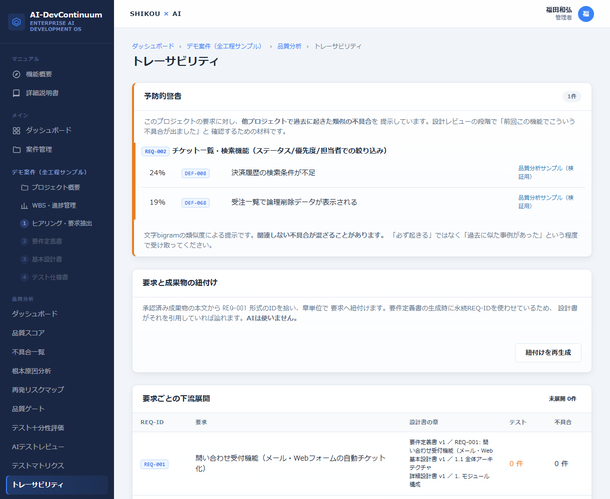
トレーサビリティ。要求⇔設計⇔テストの対応関係を追跡する
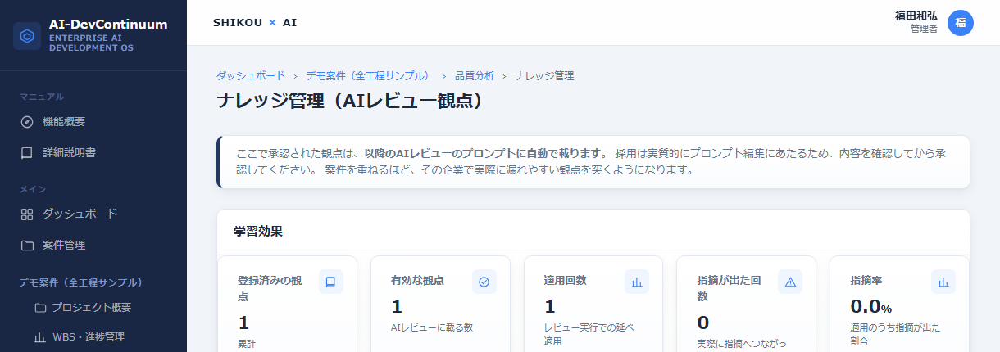
ナレッジ管理。指摘を観点として蓄積し、次のAIレビューに反映する
AIを業務に組み込むうえで避けられない不安に、機能として答えます。「便利だが何をしているか分からない」状態にはしません。
ここまで紹介してきた実装済みの機能を一覧できるようまとめました。これから対応していくオプション機能は、次の「今後実装していく機能」をご覧ください。
| カテゴリ | 機能 | 補足 |
|---|---|---|
| 要求管理 | ヒアリング・要求抽出 | 会話ログ・議事録からAIが抽出。機能要求はREQ-ID管理 |
| 設計・仕様 | 要件定義書〜結合テスト仕様書の生成・AIレビュー・承認 | 版管理、成果物ごとに異なる5観点、企業別テンプレート、MD/Word/Excel出力 |
| 実装 | AIコード生成 | 詳細設計書から自動起案／人が変更依頼、サンドボックス検証→人間承認 |
| 実装 | 単体テスト自動生成・テストケース抽出 | 詳細設計書の最新版から抽出可能 |
| 実装 | レビューエンジン選択 | Claude CLI / Codex CLI |
| 実装 | 対応言語 | Python・Node.js・Go・Java・C#（.NET）・C/C++ |
| 実装 | GitHub / GitLab連携（PR/MR発行） | 適用済みの変更からブランチ作成・コミット・push・PR/MR発行。人間が明示操作した時のみ実行 |
| 品質分析 | データ取り込み・機能マスタ | CSV・JUnit・Git連携 |
| 品質分析 | 品質ダッシュボード | 実データの機械的集計 |
| 品質分析 | 不具合分析・根本原因分析 | AIが根本原因・混入工程を分類（検出工程は実績データ） |
| 品質分析 | 再発リスクマップ（7要素） | 重み調整可、生値・相対値を併記 |
| 品質分析 | テスト十分性評価・テストマトリクス | 要求×テストケースでAI起案 |
| 品質分析 | 品質スコア・品質ゲート | 決定論的算出、人間による上書き通過 |
| 品質分析 | トレーサビリティ・ナレッジ管理 | REQ-ID追跡、組織学習ループ |
| 品質分析 | AI変更管理（影響分析） | 要求変更の影響範囲分析 |
| PM | AI PM（WBS・工数・進捗） | WBS自動生成・見積/実績工数・進捗率算出 |
| 標準化 | 開発標準エンジン（規約取り込み） | 生成・レビューの判断材料に反映 |
| セキュリティ | 送信前マスキング・送信前プレビュー | fail closed、氏名は登録辞書との照合方式 |
| セキュリティ | 監査ログ | ハッシュのみ保存、改ざん・削除不可 |
| セキュリティ | サンドボックス検証・権限管理 | 隔離実行→人間承認、4ロールで権限分離 |
以下はAI-DevContinuum導入時に対応を予定している機能です。カスタマイズ費用は、導入費用・ライセンス費用に含まれています。
貴社の開発フロー・体制に合わせてカスタマイズさせていただきますが、下記記載の【導入・環境構築（標準）】の範囲内であれば、基本追加費用は発生いたしません。また、本稼働後におきましても、ライセンス費の範囲内でカスタマイズ対応させていただきます。
なお、Claude等AIの利用料金・AWS等クラウドのランニングコストは含まれておらず、別途必要です。以下は目安としてご参照ください。
金額はいずれも税抜・標準導入期間6カ月を前提とした目安です。ライセンス費は導入期間終了後から発生します。
上記はいずれも目安・税抜表示です。記載の範囲内であれば、追加費用は発生しません。
要求管理からテスト管理・構成管理までを一気通貫で持つ、海外大手の統合開発管理ツール（オンプレミス／大規模SaaS型）を想定した一般的な機能水準との比較です。実際の他社製品の仕様・料金は製品ごとに異なるため、ご検討の際は各社へ直接ご確認ください。
| 比較項目 | 統合開発管理ツール（大手・海外SaaS型） | AI-DevContinuum｜現在 | AI-DevContinuum｜将来 |
|---|---|---|---|
| 要求管理 | ◎ | ◎ | ◎ |
| トレーサビリティ | ◎ | ◎ | ◎◎ |
| リスク管理 | ◎ | ○ | ◎ |
| テスト管理 | ◎ | ○ | ◎ |
| 構成管理（要求⇔設計⇔コード⇔テストのバージョン連携） | ◎ | △ | ◎ |
| 規制対応支援（監査証跡・電子承認など） | ◎◎ | △ | ○〜◎ |
| 製品バリエーション・拡張エコシステム | ◎◎ | △ | ○〜◎ |
| AIによる成果物生成 | ○〜◎ | ◎◎ | ◎◎ |
| AIレビュー | ○〜◎ | ◎◎ | ◎◎ |
| AIによる品質分析 | ○ | ◎◎ | ◎◎ |
| 企業固有ナレッジの蓄積・反映 | ○ | ◎◎ | ◎◎ |
| AIによるPM支援 | △ | ○ | ◎◎ |
| 継続的な品質学習（組織学習ループ） | △ | ◎◎ | ◎◎ |
| 導入・運用の軽さ | △ | ◎◎ | ◎◎ |
| AI中心のUX | △ | ◎◎ | ◎◎ |
◎◎＝業界最高水準として確立 ◎＝高水準で標準搭載 ○＝機能はあるが限定的 △＝対応が薄い・オプション頼み 〜＝幅を持たせた水準（前提条件により変動）。「AI-DevContinuum｜将来」は今後の拡張予定であり、現時点で到達済みの水準ではありません。一般的な傾向としての比較であり、個別製品の仕様を保証するものではありません。
統合開発管理ツールは要求・構成・規制対応まで含めた「守りの厳格さ」に強みがあり、規制産業や大規模組織での実績が豊富です。一方でライセンスは1ユーザーあたり年間数万円〜十数万円規模になることが多く、大規模導入では総額が数千万円規模に達することも珍しくありません。AI-DevContinuumは、AIによる下書き生成・レビュー・品質分析・ナレッジ蓄積を核に据え、軽量に立ち上げて自社の開発フローに合わせて拡張していく方向性の製品です。
※「規制対応支援」は、ISO 26262・IEC 62304等の特定規格認証の取得・保証を意味するものではありません。監査証跡・電子承認・変更履歴・要求⇔設計⇔テストのトレーサビリティといった、規格対応に必要となりやすい記録・追跡の仕組みを支援する機能を指します。特定規格への正式対応には、規格ごとの要求事項の整理と運用プロセス・証跡の検証が別途必要です。
導入をご検討いただく際によくいただく質問です。ここに無い点は無料相談で直接お尋ねください。
はい。全工程を一度に導入する必要はありません。要求定義・設計だけといった一部工程からの導入も可能で、Phase 1・2だけ動かして効果を見てから段階的なカスタマイズにも対応させていただきます。
既定言語としてPython・Node.js・Go・Java・C#（.NET）・C/C++の6言語に対応しています。それ以外の言語を使う場合は「その他」を選び、テストコマンドをご自身で入力していただくことでご利用いただけます（既定言語のような組み込みのテストコマンドは用意されていません）。
いいえ。AIが作るのは常に下書き・提案までです。成果物の承認・コード変更の適用・リリースの可否は必ず人間が判断します。
AIへ送信する前に、氏名・メールアドレス・電話番号・APIキー等を自動マスキングします。マスキング規則に不備を検知した場合は送信自体を中止します。詳しくは上記「セキュリティ・ガバナンス」をご覧ください。
標準導入期間は6カ月を目安としています（導入・環境構築2カ月＋AIチューニング4カ月）。対象工程や案件規模、カスタマイズ範囲によって変動します。詳しくは「料金の目安」をご覧ください。
現状、既存ツールからの自動移行機能はありません。導入時のヒアリングで現在お使いのツール・データ形式を伺い、移行方法を個別にご相談させていただきます。
全工程をまとめて変える必要はありません。 今の開発フロー・使っているツールをお伺いし、どこから始めるかを一緒に決めていきます。
通常1営業日以内にご返信させていただきます